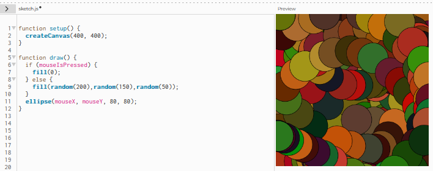
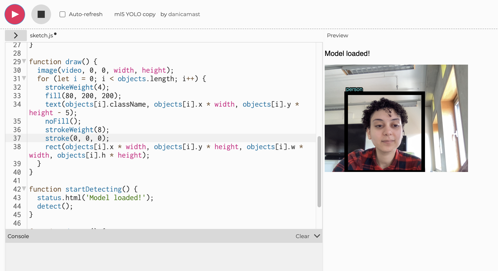
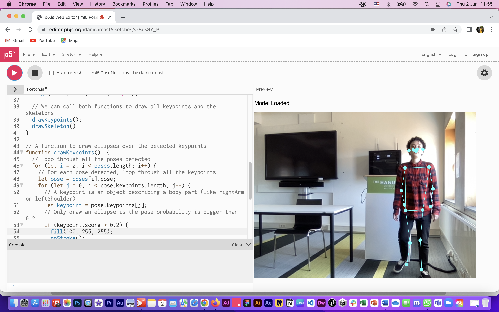
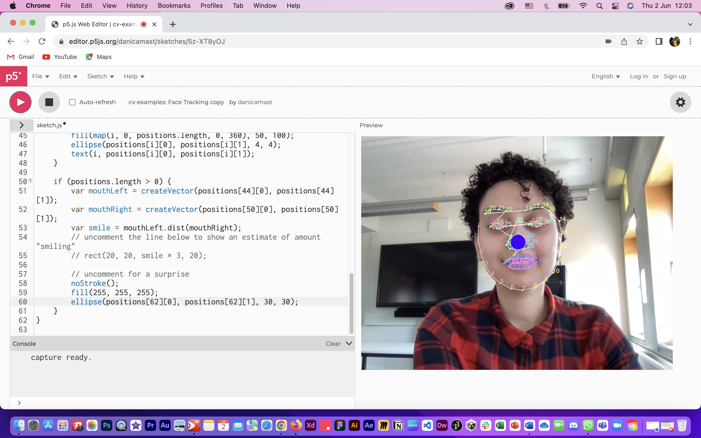
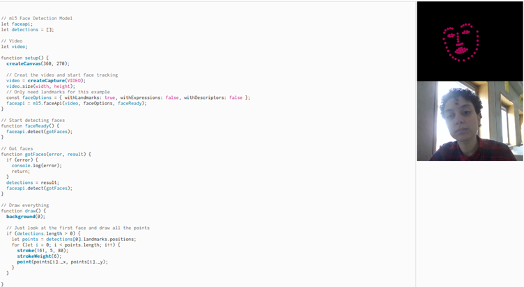
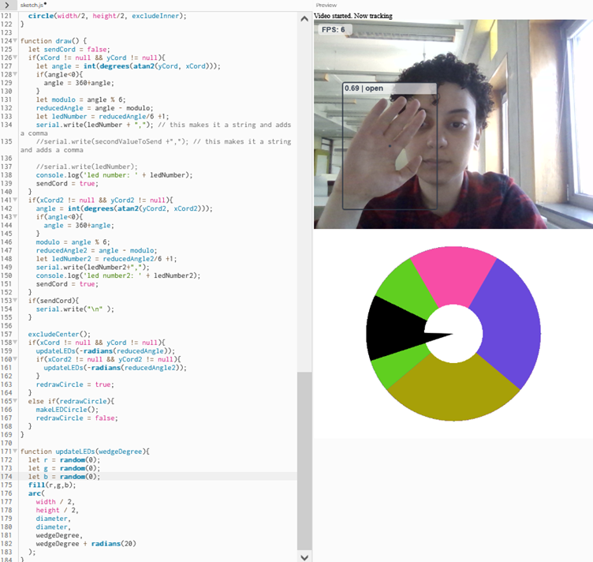
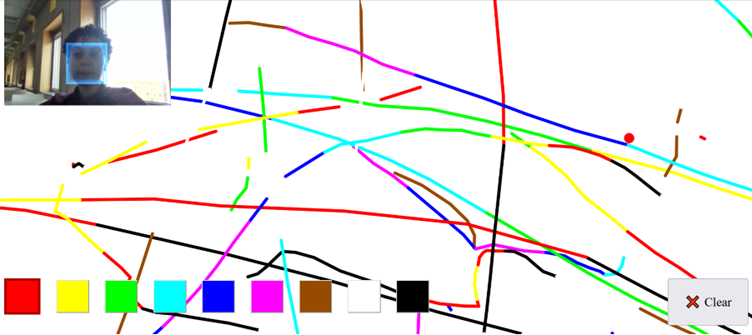
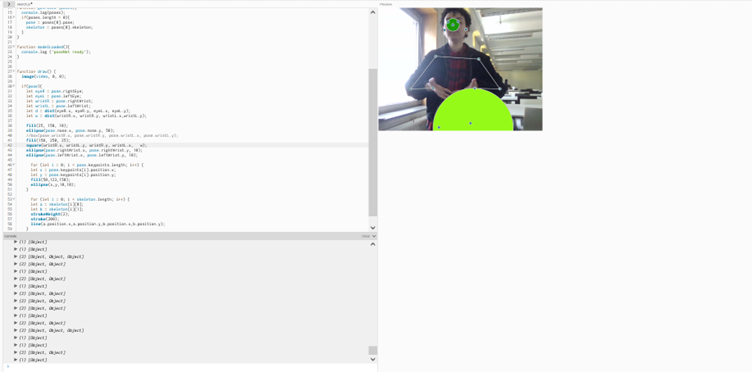
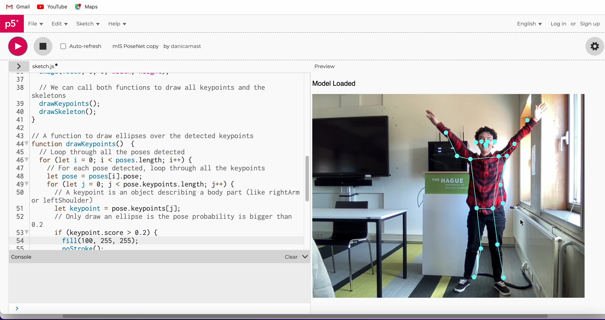

Computer Vision
Computer Vision allows computers to process visual information captured by cameras. It allows computers to detect and recognize humans and objects. Based on this processed visual information, subsequent actions are taken by the computer based on its programming. When computer vision is powered with artificial intelligence and machine learning, it becomes a powerful that can be used to emulate human's ability to see and process visual information. While the field has a long way to go to reach this maturity, steps are being taken to optimize the technology.
The following are some examples of how computer visions can be used using p5.js.
Adding Color

Real time object detection and recognition using YOLO

Skeleton tracking and face-tracking using PoseNet

Face Tracking


Hand Tracking

Hand tracking combined with a moving particle system
Face painting

Hand position and distance

Cheer Detection

Reflection
The assignments of these workshop were quite fun to do. I learned about how computer vision works and how it can be utilized to detect humans and objects. Computer vision is used in various fields such as surveillance and in robots. These uses can be both advantageous to the user or disadvantageous depending on how the technology is utilized and how the data is processed and stored.